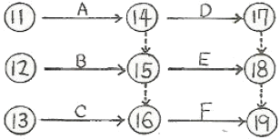
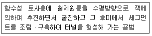
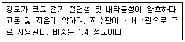
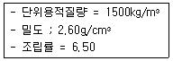
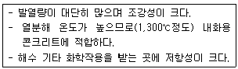
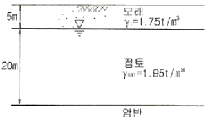
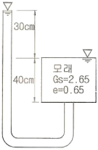
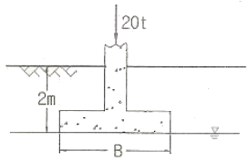

건설재료시험기사 (2010-09-05 기출문제)
1과목: 콘크리트공학
1. 설계기준압축강도가 24MPa인 경우 배합강도를 구하면? (단, 콘크리트 압축강도의 표준폍차를 알지 못할 경우)
- 24.5MPa
- 31MPa
- 32.5MPa
- 34MPa
(정답률: 78%)

2. 굵은골재의 최대치수에 관한 설명으로 옳은 것은?
- 거푸집 양 측면 사이의 최소 거리의 3/4을 초과하지 않아야 한다.
- 단면이 큰 구조물인 경우 25mm를 표준으로 한다.
- 무근 콘크리트인 경우 20mm를 표준으로 하며, 또한 부재 최소 치수의 1/5을 초과해서는 안된다.
- 개별 철근, 다발철근, 긴장재 또는 덕트 사이 최소 순간격의 3/4을 초과하지 않아야 한다.
(정답률: 67%)
3. 고압증기양생을 한 콘크리트의 특징을 설명한 것으로 틀린 것은?
- 매우 짧은 기간에 고강도가 얻어진다.
- 황산염에 대한 저항성이 증대된다.
- 건조수축이 증가한다.
- 철근의 부착강도가 감소한다.
(정답률: 93%)
4. 일반 수중콘크리트의 배합에 관한 설명으로 틀린 것은?
- 물-결합재비는 50% 이하를 표준으로 한다.
- 단위시멘트량은 370kg/m3 이상을 표준으로 한다.
- 잔골재율을 작게 하여 재료분리를 방지한다.
- 트레미를 사용하여 시공하는 일반 수중콘크리트의 슬럼프의 표준값은 130~180mm이다.
(정답률: 54%)
5. 다음 중 콘크리트의 작업성(워커빌리티)을 측정하기 위한 시험방법이 아닌 것은?
- 프록터(proctor)관입시험
- 비비(Vee-Bee)시험
- 흐름(flow)시험
- 다짐계수측정시험
(정답률: 57%)
6. 다음 중 콘크리트의 시방배합을 현장배합으로 수정할 때 고려하여야 하는 것은?
- 슬럼프 값
- 골재의 표면수
- 골재의 마모
- 시멘트량
(정답률: 74%)
7. 프리스트레스트 콘크리트 구조물이 철근콘크리트 구조물보다 유리한 점을 설명한 것 중 옳지 않은 것은?
- 사용하중하에서는 균열이 발생하지 않도록 설계되기 때문에 내구성 및 수밀성이 우수하다.
- 콘크리트의 전당면을 유효하게 이용할 수 있어 동일한 하중에 대해 부재 처짐이 작다.
- 충격하중이나 반복하중에 대해 저항력이 크며 부재의 중량을 줄일 수 있어 장대교량에 유리하다.
- 강성이 크기 때문에 변형이 작고, 고은에 대한 저항력이 우수하다.
(정답률: 82%)
8. 블리딩에 관한 사항 중 잘못된 것은?
- 블리딩이 많으면 레이턴스도 많아지므로 콘크리트 이음부에서는 블리딩이 콘 콘크리트는 불리하다.
- 시멘트의 분말도가 높고 단위수량이 적은 콘크리트는 블리딩이 작아진다.
- 블리딩이 큰 콘크리트는 강도와 수밀성이 작아지나 철근콘크리트에서는 철근과의 부착을 증가시킨다.
- 콘크리트치기가 끝나면 블리딩이 발생하며 대략 2~4시간에 끝난다.
(정답률: 75%)
9. 프리스트레스트 콘크리트에 대한 설명으로 틀린 것은?
- 프리스트레스트 콘크리트그아우트에 사용하는 혼화제는 블리딩 발생이 없는 타입의 사용을 표준으로 한다.
- 굵은 골재 최대 치수는 보통의 경우 25mm를 표준으로 한다.
- 그라우트 시공은 프리스트레싱이 끝난 후 1일 이내에 실시하여야 한다.
- 거푸집은 부재가 완성된 후 소정의 형상이 되도록 프리스트레싱에 의한 콘크리트 부재의 변형을 고려하여 적절한 솟음을 두어야 한다.
(정답률: 63%)
10. 팽창콘크리트의 팽창률에 대한 설명으로 틀린 것은?
- 콘크리트의 팽창률은 일반적으로 재령 28일에 대한 시험치를 기준으로 한다.
- 수축보상용 콘크리트의 팽창률은 (150~250)×10-6을 표준으로 한다.
- 화학적 프리스트레스용 콘크리트의 팽창률은 (200~700)×10-6을 표준으로 한다.
- 공장제품에 사용되는 화학적 프리스트레스용 콘크리트의 팽창률은 (200~1,000)×10-6을 표준으로 한다.
(정답률: 62%)
11. 시멘트의 제조시 필요한 각종 원료를 소성로에서 소성하여 1차로 생산되는 것을 무엇이라고 하는가?
- 클링커(clinker)
- 킬른(kiln)
- 소석회
- 석고
(정답률: 85%)
12. 숏크리트에 대한 설명으로 옳지 않은 것은?
- 거푸집이 불필요하다.
- 공법에는 건식법과 습식법이 있다.
- 평활한 마무리면을 얻을 수 있다.
- 작업시에 분진이 많이 발생한다.
(정답률: 69%)
13. 알칼리골재반응(alkali-aggregate reaction)에 대한 설명 중 틀린 것은?
- 콘크리트 중의 알칼리 이온이 골재 중의 실리카 성분과 결합하여 구조물에 균열을 발생시키는 것을 말한다.
- 알칼리골재반응의 진행에 필수적인 3요소는 반응성 골재의 존재와 알칼리량 및 반응을 촉진하는 수분의 공급이다.
- 알칼리골재반응이 진행되면 구조물의 표면에 불규칙한 (거북이등 모양 등) 균열이 생기는 등의 손상이 발생한다.
- 알칼리골재반응을 억제하기 위하여 포틀랜드시멘트의 들가알칼리량이 6%이하의 시멘트를 사용하는 것이 좋다.
(정답률: 84%)
14. 수중콘크리트의 시공에서 주의해야 할 사항으로 틀린 것은?
- 물막이를 설치하여 물을 정지시킨 정수 중에서 타설하는 것을 원칙으로 한다.
- 한 구획의 콘크리트 타설을 완료한 후 레이턴스를 모두 제거하고 다시 타설하여야 한다.
- 콘크리트는 수중에 낙하시키지 않아야 한다.
- 완전히 물막이를 할 수 없어 콘크리트를 유수 중에 타설할 때 한계유속은 5m/sec 이하로 하여야 한다.
(정답률: 96%)
15. 콘크리트 크리프(creep)에 대한 설명 중 옳지 않은 것은?
- 물-시멘트비가 큰 콘크리트는 물-시멘트비가 작은 콘크리트보다 크리프가 크게 일어난다.
- 응력은 변화가 없는데 변형은 계속 진행되는 현상을 크리프라 한다.
- 조강 시멘트는 보통 시멘트보다 크리프가 크다.
- 재하기간 중의 대기의 습도가 낮을수록 크리프가 크다.
(정답률: 67%)
16. 현장의 골재에 대한 체분석 결과 잔골재 속에 5mm체에 남는 것이 6%, 굵은골재 속에 5mm체를 통과하는 것이 11%였다. 시방배합표상의 단위잔공재량은 632kg/m3이며, 단위굵은골재량은 1176kg/m3이다. 현장배합을 위한 단위잔골재량은 얼마인가?
- 522 kg/m3
- 537 kg/m3
- 612 kg/m3
- 648 kg/m3
(정답률: 50%)
17. 콘크리트 비비기에 대한 설명으로 잘못된 것은?
- 비비기 시간에 대한 시험을 실시하지 않은 경우 그 최소시간은 강제식 믹서일 때에는 1분 이상을 표준으로 한다.
- 비비기는 미리 정해둔 비비기 시간 이상 계속해서는 안된다.
- 믹서 안의 콘크리트를 전부 꺼낸 후가 아니면 믹서 안에 다음 재료를 넣어서는 안된다.
- 연속믹서를 사용할 경우, 비비기 시작 후 최초에 배출되는 콘크리트는 사용해서는 안된다.
(정답률: 89%)
18. 콘크리트 구조물의 내화성을 향상 시키기 위한 방안으로 틀린 것은?
- 제조시에 골재는 화강암이나 사암을 사용하면 좋다.
- 콘크리트 표면을 단열재로 보호한다.
- 내화성능이 약한 강재는 보호하여 피복두께를 충분히 취한다.
- 철근의 외측 콘크리트가 벗겨지는 것을 방지하기 위하여 팽창성 금속(expanded metal)을 표층부에 넣는다.
(정답률: 80%)
19. 매스(mass) 콘크리트에 대한 설명으로 틀린 것은?
- 매스 콘크리트로 다루어야 하는 구조물의 부재치수는 일반적인 표준으로서 넓이가 넓은 평판구조의 경우 두께 0.8m이상으로 한다.
- 매스 콘크리트로 다루어야 하는 구조물의 부재치수는 일반적인 표준으로서 하단이 구속된 벽조의 경우 두께 0.3m 이상으로 한다.
- 콘크리트를 타설한 후에 침하의 발생이 우려되는 경우에는 재진동 다짐을 실시하여야 한다.
- 수축이음을 설치할 경우 계획된 위치에서 균열 발생을 확실히 유도하기 위해서 수축이음의 단면 감소율을3 5%이상으로 하여야 한다.
(정답률: 73%)
20. 구조체 콘크리트의 압축강도 비파괴 시험에 사용되는 슈미트 해머로써 구조체가 경량 콘크리트인 경우 사용하는 슈미트 해머는?
- N형 슈미트 해머
- L형 슈미트 해머
- P형 슈미트 해머
- M형 슈미트 해머
(정답률: 84%)
2과목: 건설시공 및 관리
21. 운반토량 900m3을 5m3 덤프트럭으로 운반하려고 한다. 트럭의 평균속도는 8kg/h이고, 상차 시간이 5분, 하차시간이 5분 일 때 하루에 전량을 운반하여면 몇 대의 트럭이 소요되는가? (단, 1일 작업시간 8시간, 토사장까지의 거리는 2km)
- 8대
- 10대
- 13대
- 15대
(정답률: 48%)
22. 3점 견적법에 따른 적정공사일수는? (단, 낙관일수=5일, 정상일수=7일, 비관일수=15일)
- 6일
- 7일
- 8일
- 9일
(정답률: 93%)
23. 말뚝의 지지력 산정에 있어서 말뚝과 지반 및 말뚝 머리의 탄성변형량을 고려한 공식은?
- Meyerhof 공식
- Sander 공식
- Hiley 공식
- Engineering News 공식
(정답률: 57%)
24. 아스팔트 포장의 특성에 대한 설명으로 틀린 것은?
- 교통하중을 슬래브가 휨 저항으로 지지
- 작은 덧씌우기 등으로 인해 유지관리비가 많이 소요
- 양생기간이 짧아 시공 후 즉시 교통 개발이 가능
- 부분파손에 대한 보수가 용이
(정답률: 80%)
25. 토공에 대한 다음 설명 중 틀린 것은?
- 시공기면은 현재 공사를 하고 있는 면을 말한다.
- 토공은 굴착, 싣기, 운반, 성토(사토) 등의 4공정으로 이루어진다.
- 준설은 수저의 토사 등을 굴착하는 작업을 말한다.
- 법면은 비탈면으로 성토, 절토의 사면을 말한다.
(정답률: 93%)
26. 다음 건설기계 중 굴착과 싣기를 같이 할 수 있는 기계가 아닌 것은?
- 백로
- 트랙터 쇼벨
- 준설선(dredger)
- 리퍼(ripper)
(정답률: 74%)
27. 연약지반개량공법 중 전기삼투(Electro Osmosis)공법에 대한 설명으로 틀린 것은?
- 지반에 직류전기를 걸어주면 전위차에 의하여 지하수가 음극으로 이동하는 현상을 이용한 공법이다.
- 지하수에 염분 등의 전해질이 있을 경우 집수효과가 상당히 좋다.
- 전압을 높이면 투수계수가 작은 점토층의 압밀을 조기에 끝낼 수 있지만, 이 경우 매우 다량의 전력 소비를 해야 하는 문제점이 있다.
- 중력배수 등으로 효과를 기대할 수 없는 실트질 또는 점토질 성분이 많은 지반에 적용이 가능하다.
(정답률: 43%)
28. 1개의 간선 집수거 또는 집수지거에 많은 흡수거를 합류시켜 만든 방식으로 지형이 완만한 경사로 되어 있고 습윤상태가 비슷한 곳에 적합한 암거배열 방식은?
- 자연식
- 사이펀식
- 빗식
- 2중간선식
(정답률: 65%)
29. 1개마다 양ㆍ불량으로 구별할 경우 사용하나 불량률을 계산하지 않고 불량개수에 의해서 관리하는 경우에 사용하는 관리도는?
- U관리도
- C관리도
- P관리도
- Pn관리도
(정답률: 64%)
30. 다음 공정표에 대한 설명으로 가장 적합한 것은?

- D는 A, B가 완료하여야 시작할 수 있다.
- F는 A, B, C가 완료하여야 시작할 수 있다.
- E는 A만 완료하면 시작할 수 있다.
- E는 A, D가 완료하여야 시작할 수 있다.
(정답률: 100%)
31. 아래의 표에서 설명하는 터널공법의 명칭으로 옳은 것은?

- 아일랜드 공법
- 침매 공법
- 쉴드 공법
- TBM 공법
(정답률: 65%)
32. 댐의 기초암반의 변형성이나 강도를 개량하여 균일성을 주기 위하여 기초지반에 걸쳐 격자형으로 그라우팅을 하는 것은?
- 압밀(consolidation) 그라우팅
- 커튼(curtain) 그라우팅
- 블랭킷(blanket) 그라우팅
- 림(rim) 그라우팅
(정답률: 64%)
33. 교대의 명칭 중 구체(main body)를 가장 적절하게 설명한 것은?
- 교량의 일단을 지지하는 것
- 축제의 상부를 지지하여 흙이 교좌에서 무너지는 것을 맏는 것
- 삼부구조에서 오는 전하중을 기초에 전달하고 배후 구조에 저항하는 것
- 하중을 기초 지반에 넓게 분포시켜 교대의 안정을 도모하는 것
(정답률: 54%)
34. 사질토 100,000m3로 도로를 시공하려고 한다. 도로의 성토(다짐)단면은 윗폭이 6m, 높이 4m, 비탈경사를 1:1:5로 만든다면 시공가능한 도로의 길이는? (단, 사질토의 토량의 변화율 L=1.25, C=0.88)
- 1666.7m
- 1833.3m
- 2367.4m
- 2604.2m
(정답률: 62%)
35. 흙댐을 구조상 분류할 때 중앙에 불투수성의 흙을, 양측에는 투수성 흙을 배치한 것으로 두 가지 이상의 재료를 얻을 수 있는 곳에서 경제적인 댐 형식은?
- 심벽형 댐
- 균일형 댐
- 월류 댐
- Zone형 댐
(정답률: 69%)
36. 장악공 주변에 미치는 파괴력을 제어함으로써 특정방향에만 파괴효과를 주어 여굴을 적게하는 등의 목적으로 사용하는 조절폭파공법의 종류가 아닌 것은?
- 라인 드릴링
- 벤치 컷
- 쿠션 블라스팅
- 프리스플리팅
(정답률: 47%)
37. 보조기층, 입도 조정기층 등에 침투시켜 이들 층의 방수성을 높이고 그 위에 포설하는 아스팔트 혼합물과의 부착이 잘되게 하기 위하여 보조기층 또는 기층위에 역충재를 살포하는 것을 무엇이라 하는가?
- 프라임 코트(prime coat)
- 택 코트(tack coat)
- 실 코트(seal coat)
- 패칭(patching)
(정답률: 85%)
38. 토공에서 토취장 선정에 고려하여야 할 사항으로 틀린 것은?
- 토질이 양호할 것
- 성토장소를 향하여 상향구배(1/5~1/10)일 것
- 토량이 충분할 것
- 운반로 조건이 양호하며, 가깝고 유지관리가 용이할 것
(정답률: 78%)
39. 오픈케이슨 공법의 장점에 대한 설명으로 틀린 것은?
- 기계굴착이므로 시공이 빠르다.
- 가설비 및 기계설비가 비교적 간단하다.
- 호박돌 및 기타 장애물이 있을 시 제거작업이 쉽다.
- 공사비가 비교적 싸다.
(정답률: 60%)
40. 특수제작된 거푸집을 이동시키면서 진행방향으로 슬래브를 타설하는 공법이며, 유압잭을 이용하여 전ㆍ후의 구동이 가능하며 mail girder 및 form work를 상하좌우로 조절 가능한 기계화된 교량가설공법은?
- dywidag 공법
- ILM 공법
- MSS 공법
- FCM 공법
(정답률: 50%)
3과목: 건설재료 및 시험
41. 다음 중 시멘트에 관한 설명이 틀린 것은?
- 중용열포틀랜드시멘트는 수화열을 낮추기 위하여 화학조성 중 C3A의 양을 적게하고 그 대신 장기강도를 발현하기 위하여 C2S량을 많게 한 시멘트이다.
- 시멘트의 강도시험은 결합재료로서의 결합력발현의 정도를 알기 위해 실시한다.
- 응결시험은 시멘트의 강도 발현속도를 알기 위해 실시한다. 일반적으로는 초결이 빠른 시멘트는 강도가 크다.
- 시멘트는 저장중에 공기와 접촉하면 공기 중의 수분 및 이산화탄소를 흡수하여 가벼운 수화반응을 일으키게 되는데, 이것을 풍화라 한다.
(정답률: 60%)
42. 다음 특성을 갖는 열가소성 수지는?

- 염화비닐 수지
- 요소 수지
- 실리콘 수지
- 페놀 수지
(정답률: 82%)
43. 어떤 데이터(data)의 평균이 11이고, 표준편차가 1.83일 때 변동계수는?
- 12.5%
- 25.0%
- 16.6%
- 26.6%
(정답률: 50%)
44. 조암광물에 대한 설명 중 틀린 것은?
- 석영은 무색, 투명하며 산 및 풍화에 대한 저항력이 크다.
- 사장석은 Al, Ca, Na, K 등의 규산화합물이며 풍화에 대한 저항력이 크다.
- 백운석은 산에 녹기 쉬운 광물이다.
- 석고는 경도가 1.5~2.0 정도이고 입상, 편상, 섬유모양으로 결합되어 있다.
(정답률: 56%)
45. 아스팔트의 침입도 시험기를 사용하여 온도 25℃로 일정한 조건에서 100g의 표준침이 3mm 관입했다면, 이 재료의 침입도는 얼마인가?
- 3
- 6
- 30
- 60
(정답률: 67%)
46. 흑색화약에 대한 설명 중 옳지 않은 것은?
- 비중이 1.5~1.8정도이고, 폭파시 2000℃의 고온과 6.6t/cm2정도의 압력이 발생한다.
- 보관과 취급이 간편하고 흡수성이 크다.
- 수중폭파가 불가능하고 연소시 연기가 많이 난다.
- 니트로셀룰로오스 또는 니트로셀룰로오스와 니트로글리세린을 주성분으로 하는 화약이다.
(정답률: 44%)
47. 용 혼화재료에 대한 설명으로 틀린 것은?
- 방청제는 철근이나 PC강선이 부식하는 것을 방지하기 위해 사용한다.
- 급결제는 사용한 콘크리트는 초기 28일의 강도증진은 매우 크고, 장기강도의 증진 또한 큰 경우가 많다.
- 지연제는 시멘트의 수화반응을 늦춰 응결시간을 길게 한 목적으로 사용되는 혼화제이다.
- 촉진제는 보통 염화칼슘을 사용하며 일반적인 사용량은 시멘트 질량에 대하여 2%이하를 사용한다.
(정답률: 58%)
48. 골재의 조립율 시험에 사용되는 10개의 체규격에 해당되지 않는 것은?
- 25mm
- 10mm
- 1.2
- 0.6mm
(정답률: 84%)
49. 역청 유제에 관한 다음 설명 중 옳지 않은 것은?
- 점토계 유제는 유호제로서 벤토나이트, 점도무기수산화물과 같이 물에 녹지 않는 광물질을 수중에 분산시켜 이것에 역청재를 가하여 유화시킨 것으로서 유화액은 산성이다.
- 음이온계 유제는 적당한 유화제를 가하여 희박알칼리 수용액 중에 아스팔트 입자를 분산시켜 생성한 미립자 표면을 전기적으로 1(-)로 대전시킨 것이다.
- 양이온계 유제의 유화액은 산성이다.
- 역청 유제는 유제의 분해 속도에 따라 RS, MS, SS의 세 종류로 분류할 수 있다.
(정답률: 36%)
50. 다음은 굵은 골재를 시험한 결과이다. 이 결과를 이용하여 굵은 골재의 공극률을 구하면?

- 42.3%
- 43.4%
- 56.6%
- 57.7%
(정답률: 40%)
51. 콘크리트용 강섬유에 대한 설명으로 틀린 것은?
- 형상에 따라 직선섬유와 이형섬유가 있다.
- 강섬유의 인장강도 시험은 강섬유 5ton마다 10개 이상의 시료를 무작위로 추출해서 수행한다.
- 강섬유의 평균인장강도는 200MPa 이상이 되어야 한다.
- 강섬유는 16℃이상의 온도에서 지름 안쪽 90° 방향으로 구부렸을 때 부러지지 않아야 한다.
(정답률: 67%)
52. 콘크리트용 혼화재료인 플라이애시에 대한 다음 설명 중 틀린 것은?
- 플라애시는 보존중에 입자가 응집하여 고결하는 경우가 생기므로 저장에 유의하여야 한다.
- 플라이애시는 인공포졸란 재료로 잠재수경성을 가지고 있다.
- 플라이애시는 워커빌리티 증가 및 단위수량 감소효과가 있다.
- 플라이애시 중의 미연탄소분에 의해 AE제 등이 흡착되어 연행공기량이 현저히 감소한다.
(정답률: 79%)
53. 다음 중 천연 경량골재가 아닌 것은?
- 팽창 슬래그
- 응회암
- 용암
- 경석 화산자갈
(정답률: 50%)
54. 다음 특성을 가지는 시멘트는?

- 실리카 시멘트
- 알루미나 시멘트
- 고로 시멘트
- 조강 포틀랜드 시멘트
(정답률: 84%)
55. 비교적 연한 스트레이트 아스팔트에 적당한 휘발성 용제를 가하여 점도를 저하시켜 유동성을 좋게 한 아스팔트는?
- 유화 아스팔트
- 아스팔타이트
- 컷백 아스팔트
- 타르
(정답률: 50%)
56. 알루미늄 분말이나 아연분말을 콘크리트에 혼입시켜 수소가스를 발생시켜 PC용 그라우트의 충전성을 좋게 하기 위하여 사용하는 혼화제는?
- 유동화제
- 방수제
- AE제
- 발포제
(정답률: 75%)
57. 다음 중 목재의 특징으로 틀린 것은?
- 재질이 균질하다.
- 함수량에 따라 수축 팽창이 크다.
- 무게에 비해 강도와 탄성이 크다.
- 열, 소리의 전도율이 작다.
(정답률: 84%)
58. 화약류 취급 및 사용시의 주의점에 대한 설명으로 틀린 것은?
- 뇌관과 폭약은 항상 동일장소에 식별이 용이토록 구분하여 보관함으로서 손실로 인한 작업의 중단이 없도록 하여야 한다.
- 장기간 보관시는 온도나 습도에 의해 변질하지 않도록 하고 흡수하여 동결하지 않도록 해야 한다.
- 도화선과 뇌관의 이음부에 수분이 침투하지 못하도록 기름 등으로 도포해야 한다.
- 도화선을 삽입하여 뇌관에 압찰할 때 충격이 가해지지 않도록 해야 한다.
(정답률: 87%)
59. 부순 굵은 골재가 콘크리트 재료로서 갖추어야 할 물리적 성질로 옳지 않은 것은?
- 흡수율 1.0% 이하
- 마모율 40% 이하
- 0.08mm체 통과량 1.0% 이하
- 절대 건조 밀도 2.50g/cm3이상
(정답률: 77%)
60. 포틀랜드시멘트의 일반적인 성질에 대한 설명으로 옳은 것은?
- 시멘트는 풍화되거나 소성이 불충분한 경우 비중이 증가한다.
- 시멘트의 분말도가 낮으면 콘크리트의 조기강도는 높아진다.
- 시멘트의 안정성은 클링커의 소성이 불충분할 경우 생긴 유리석회 등의 량이 지나치게 많을 경우 불안정해진다.
- 시멘트와 물이 반응하여 점차 유동성과 점성을 상실하는 상태를 경화라 한다.
(정답률: 48%)
4과목: 토질 및 기초
61. 아래 그림과 같은 정규압밀점토지반에서 점토층 중간에서의 비배수 점착력은? (단, 소성지수는 50%임)

- 5.38t/m2
- 6.39t/m2
- 7.38t/m2
- 8.38t/m2
(정답률: 9%)
62. 어떤 점토지반의 표준관입 실험 결과 N값이 2~4이었다. 이 점토의 consistency는?
- 대단히 견고
- 연약
- 견고
- 대단히 연약
(정답률: 50%)
63. 점토 지반의 강성 기초의 접지압 분포에 대한 설명으로 옳은 것은?
- 기초 모서리 부분에서 최대응력이 발생한다.
- 기초 중앙 부분에서 최대응력이 발생한다.
- 기초 밑면의 응력은 어느 부분이나 동일하다.
- 기초 밑면에서의 응력은 토질에 관계없이 일정하다.
(정답률: 56%)
64. φ=0인 포화된 점토시료를 채취하여 일압축시험을 행하였다. 공시체의 직경이 4cm, 높이가 8cm이고 파괴시의 하중계의 읽음 값이 4.0kg, 축방향의 변형량이 1.6cm일 때, 이 시료의 전단강도는 약 얼마인가?
- 0.07kg/cm2
- 0.13kg/cm2
- 0.25kg/cm2
- 0.32kg/cm2
(정답률: 42%)
65. Terzaghi는 포화점토에 대한 1차 압밀이론에서 수학적 해를 구하기 위하여 다음과 같은 가정을 하였다. 이 중 옳지 않은 것은?
- 흙은 균질하다.
- 흙입자와 물의 압축성은 무시한다.
- 흙속에서의 물의 이동은 Darcy 법칙을 따른다.
- 투수계수는 압력의 크기에 비례한다.
(정답률: 39%)
66. 말뚝기초의 지반거동에 관한 설명으로 틀린 것은?
- 기성말뚝을 타입하면 전단파괴를 일으키며 말뚝 주위의 지반은 교란된다.
- 말뚝에 작용한 하중은 말뚝주변의 마찰력과 말뚝선단의 지지력에 의하여 주변 지반에 전달된다.
- 연약지반상에 타입되어 지반이 먼저 변형하고 그 결과 말뚝이 저항하는 말뚝을 주동말뚝이라 한다.
- 말뚝 타입 후 지지력의 증가 또는 감소 현상을 시간효과(Time effect)라 한다.
(정답률: 57%)
67. 다음 그림에서 분사현상에 대한 안전율을 구하면?

- 1.01
- 1.33
- 1.66
- 2.01
(정답률: 48%)
68. 흙의 다짐에 관한 설명으로 틀린 것은?
- 다짐에너지가 클수록 최대건조단위중량(γdmax)은 커진다.
- 다짐에너지가 클수록 최적함수비(Wopt)는 커진다.
- 점토를 최적함수비(Wopt)보다 작은 함수비로 다지면 면모구조를 갖는다.
- 투수계수는 최적함수비(Wopt) 근처에서 거의 최소값을 나타낸다.
(정답률: 75%)
69. 동상 방지대책에 대한 설명 중 옳지 않은 것은?
- 배수구 등을 설치하여 지하수위를 저하시킨다.
- 모관수의 상승을 차단하기 위해 조립의 차단층을 지하수위보다 높은 위치에 설치한다.
- 동결 깊이보다 낮게 있는 흙을 동결하지 않는 흙으로 치환한다.
- 지표의 흙을 화학약품으로 처리하여 동결온도를 내린다.
(정답률: 39%)
70. 흙의 활성도(活性度)에 대한 설명으로 틀린 것은?
- 활성도는 (액성지수/점토함유율)로 정의된다.
- 활성도는 점토광물의 종류에 따라 다르므로 활성도로부터 점토를 구성하는 점토광물을 추정할 수 있다.
- 점토의 활성도가 클수록 물을 많이 흡수하여 팽창이 많이 일어난다.
- 흙입자의 크기가 작을수록 비표면적이 커져 물을 많이 흡수하므로, 흙의 활성은 점토에서 뚜렷이 나타난다.
(정답률: 39%)
71. 연약지반개량공법 중 프리로딩공법에 대한 설명으로 틀린 것은?
- 압밀침하를 미리 끝나게 하여 구조물에 잔류침하를 남기지 않게 하기 위한 공법이다.
- 도로의 성토나 항만의 방파제와 같이 구조물 자체의 일부를 상재하중으로 이용하여 개량 후 하중을 제거할 필요가 없을 때 유리하다.
- 압밀계수가 작고 압밀토층 두께가 큰 경우에 주로 적용한다.
- 압밀을 끝내기 위해서는 많은 시간이 소요되므로, 공사 기간이 충분해야 한다.
(정답률: 36%)
72. 10m 두께의 포화된 정규압밀점토층의 지표면에 매우 넓은 범위에 걸쳐 5.0t/m2의 등분포하중이 작용한다. γsat=2.0t/m3, 압축지수(Cc)=0.8, eo=0.6, 압밀계수(Cv)=4×10-5cm2/sec일 때 다음 설명 중 틀린 것은? (단, 지하수위는 점토층 상단에 위치한다.)
- 초기 과잉간극수압의 크기는 5.0t/m2이다.
- 점토층에 설치한 피에조미터의 재하직후 물의 상승고는 점토층 상면으로부터 5m이다.
- 압밀침하량이 75.25cm 발생하면 점토층의 평균압밀도는 50%이다.
- 일면배수조건이라면 점토층이 50% 압밀하는데 소요일수는 24500일 이다.
(정답률: 39%)
73. 흙의 모관상승에 대한 설명으로 틀린 것은?
- 흙의 모관상승고는 간극비에 반비례하고, 유효 입경에 반비례한다.
- 모관상슬고는 점토, 실트, 모래, 자갈의 순으로 점점 작아진다.
- 모관상승이 있는 부분은 (-)의 간극수압이 발생하여 유효응력이 증가한다.
- Stoked법칙은 모관상승에 중요한 영향을 미친다.
(정답률: 22%)
74. 어떤 시료를 입도분석 한 결과, 0.075(No 200)체 통과량이 65%이었고, 애터버그한계 시험결과 액성한계가 40%이었으며 소성도표(Plasticity chart)에서 A선위의 구역에 위치한다면 이 시료는 통일분류법(USCS)상 기호로서 옳은 것은?
- CL
- SC
- MH
- SM
(정답률: 34%)
75. 토압에 대한 다음 설명 중 옳은 것은?
- 일반적으로 정지토압계수는 주동토압계수보다 작다.
- Rankine 이론에 의한 주동토압의 크기는 Coulomb 이론에 의한 값보다 작다.
- 옹벽, 흙막이벽체, 널말뚝 중 토압분포가 삼각형 분포에 가장 가까운 것은 옹벽이다.
- 극한 주동상태는 수동상태보다 훨씬 더 큰 변위에서 발생한다.
(정답률: 48%)
76. 외경(Do) 50.8mm, 내경(Di) 34.9mm인 스플리트 스푼 샘플러의 면적비로 옳은 것은?
- 46%
- 53%
- 106%
- 112%
(정답률: 50%)
77. 다음 그림과 같은 정방형 기초에서 안전율을 3으로 할 때 Terzaghi 공식을 사용하여 지지력을 구하고자 한다. 이 때 한 변의 최소길이는? (단, 흙의 전단강도 c=6t/m2, φ=0이고, 흙의 습윤 및 포화단위 중량은 각각 1.9t/m3, 2.0t/m3, Nc=5.7, Nq=1.0, Nγ=0이다.)

- 1.115m
- 1.432m
- 1.512m
- 1.624m
(정답률: 45%)
78. 현장 도로 토공에서 모래치환법에 의한 흙의 밀도 시험을 하였다. 파낸 구멍의 체적이 V=1960cm3, 흙의 질량이 3390hg이고, 이 흙의 함수비는 10%이었다. 실험실에서 구한 최대 건조 밀도 γdmax=1.65g/cm3일 때 다짐도는 얼마인가?
- 85.6%
- 91.0%
- 95.2%
- 98.7%
(정답률: 42%)
79. 다음 중 흙의 강도를 구하는 실험이 아닌 것은?
- 압밀시험
- 직접전단시험
- 일축압축시험
- 삼축압축시험
(정답률: 53%)
80. 어떤 점토의 토질실험 결과 일축압축강도 0.48kg/cm2, 단위중량 1.7t/m3이었다. 이 점토의 한계고는?
- 6.34m
- 4.87m
- 9.24m
- 5.65m
(정답률: 44%)